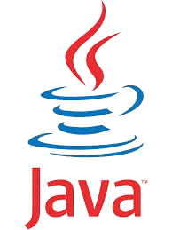
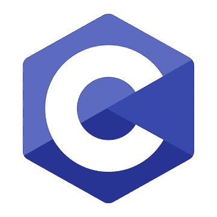
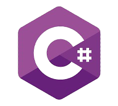
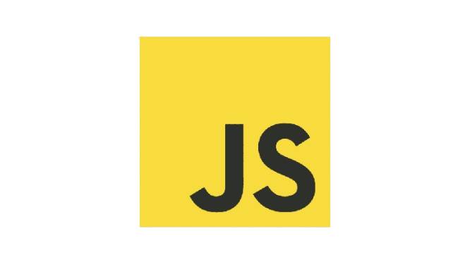
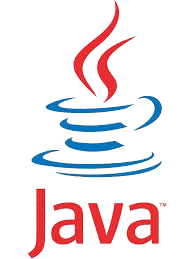
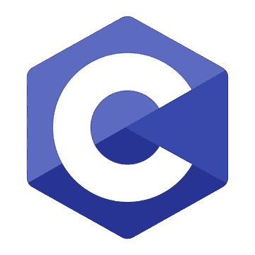
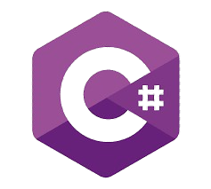
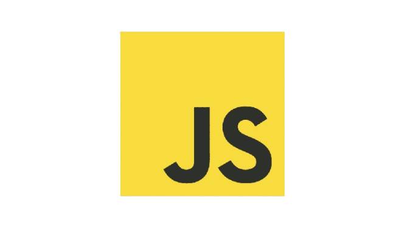

.png) 







Los lenguajes de programación son herramientas fundamentales que permiten a los desarrolladores comunicarse con las computadoras para crear software, aplicaciones, videojuegos, sistemas operativos y mucho más. Cada lenguaje tiene sus propias características, ventajas y casos de uso, lo que los hace adecuados para distintos tipos de proyectos.
Python es uno de los lenguajes más populares y versátiles en la actualidad. Se destaca por su sintaxis sencilla y legible, lo que lo convierte en una excelente opción para principiantes. Es ampliamente utilizado en inteligencia artificial, desarrollo web, análisis de datos y automatización de tareas.
C++, por su parte, es un lenguaje potente y eficiente que ofrece un alto control sobre los recursos del sistema. Es ideal para desarrollar software que requiere rendimiento, como videojuegos, sistemas operativos y aplicaciones embebidas.
Java es conocido por su lema "escribe una vez, ejecuta en cualquier lugar", ya que los programas escritos en Java pueden correr en múltiples plataformas gracias a la Máquina Virtual de Java (JVM). Es muy utilizado en el desarrollo de aplicaciones empresariales, móviles (especialmente Android) y sistemas distribuidos.
C es uno de los lenguajes más antiguos y fundamentales. Su influencia se ve en muchos otros lenguajes modernos. Es conocido por su eficiencia y cercanía al hardware, lo que lo hace perfecto para programar sistemas operativos y firmware.
C# (C Sharp) es un lenguaje desarrollado por Microsoft como parte del ecosistema .NET. Se utiliza comúnmente en el desarrollo de aplicaciones de escritorio, juegos (con Unity), y soluciones empresariales, combinando una sintaxis moderna con potentes herramientas de desarrollo.
JavaScript, aunque inicialmente creado para hacer páginas web interactivas, ha evolucionado hasta convertirse en un lenguaje completo que se usa tanto en el frontend como en el backend. Gracias a frameworks como React, Node.js y Angular, JavaScript es clave en el desarrollo web moderno.